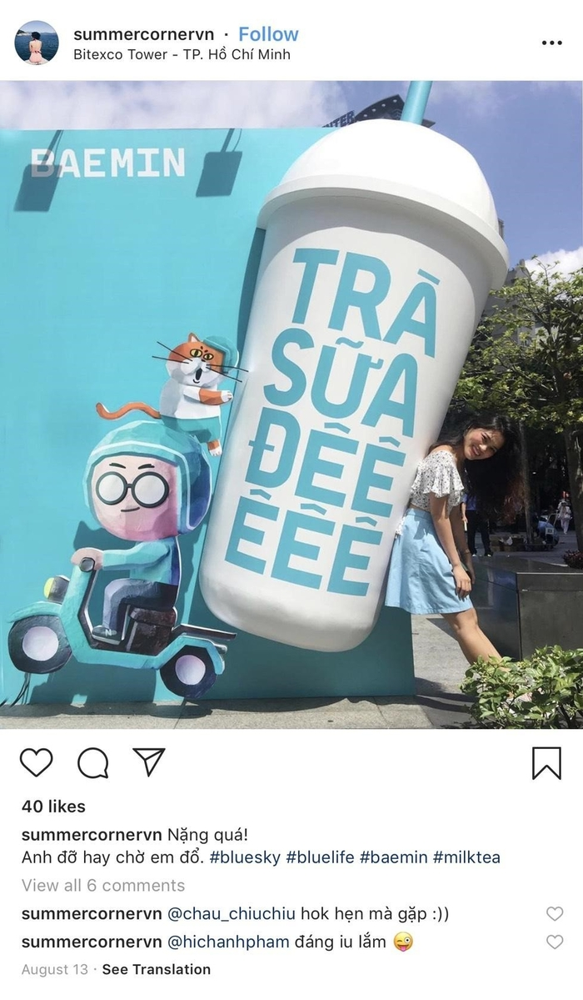

Vaccine Covid19 sẽ được tiêm miễn phí và theo dịch vụ
Sau khi tiêm vaccine phòng Covid-19 xong cho các nhóm ưu tiên, Bộ Y tế sẽ khởi động cơ chế tiêm chủng mở rộng (miễn phí) và tiêm dịch vụ.
Sáng 18/6, Thường trực Ban chỉ đạo Quốc gia về phòng, chống Covid-19 đã yêu cầu Bộ Y tế có văn bản sớm để bổ sung các đối tượng ưu tiên tiêm chủng theo nghị quyết 21, gồm những người làm việc trong cơ sở sản xuất, thương mại, dịch vụ... nhằm bảo đảm thực hiện mục tiêu kép. Đây cũng là nguyện vọng của các nhà tài trợ.
Hơn 5.000 nhân viên y tế TP HCM tham gia chiến dịch tiêm vaccine
5.160 nhân viên y tế thuộc 1.032 đội tiêm, từ 547 đơn vị gồm bệnh viện, trung tâm y tế, phòng khám tư... tham gia tập huấn chuẩn bị cho chiến dịch tiêm vaccine Covid-19 tại TP HCM.Thu hồi quyết định bổ nhiệm Phó giám đốc Sở 31 tuổi
Chủ tịch UBND tỉnh Vĩnh Phúc đã thu hồi quyết định bổ nhiệm chức danh Phó giám đốc Sở Kế hoạch và Đầu tư đối với bà Trần Huyền Trang.Vaccine Covid-19 sẽ được tiêm miễn phí và dịch vụ
Sau khi tiêm vaccine phòng Covid-19 xong cho các nhóm ưu tiên, Bộ Y tế sẽ khởi động cơ chế tiêm chủng mở rộng (miễn phí) và tiêm dịch vụNhóm tấn công báo điện tử VOV bị phát hiện
Cục An ninh mạng (A05, Bộ Công an) đã tìm ra nhóm hacker tấn công báo điện tử VOV (Đài tiếng nói Việt Nam).
